WhiteCat includes up to 4 internal audio players, controllable via mouse, MIDI, or the Banger.
Supported formats: .wav, .mp3, .ogg, .flac.
Audio output uses your system sound card (single stereo output). For multi-channel playback, use a dedicated audio application alongside WhiteCat.
An audio folder can contain up to 126 files. Files are listed in alphabetical order — number them to control playback order.
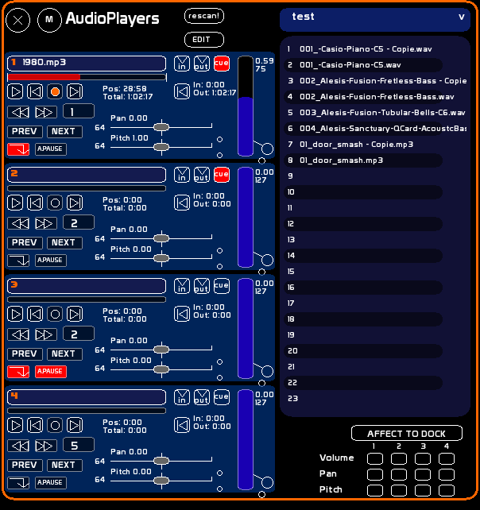
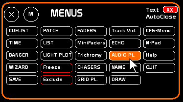
From Windows Explorer, create a subfolder inside white_cat/audio/.
Name it (e.g. MyShow).
Copy your audio files into that folder.
white_cat/
audio/
MyShow/
Rehearsal/
Demo/
The active folder name is saved with the show.
At the top right of the AudioPlayers window is the folder drop-down list.
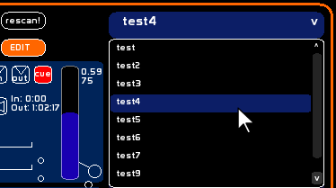
If you add files to the folder during a session, click [rescan] to update the list without restarting WhiteCat.
The right column shows the files in the active audio folder, numbered in alphabetical order.
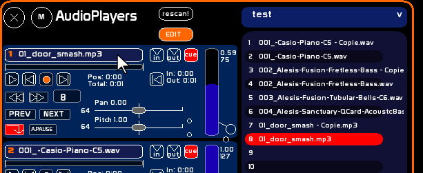
File numbers (1, 2, 3…) are the identifiers used in the Banger. They correspond to the alphabetical position in the folder.
Tip: prefix your filenames with numbers to control their order:
01_opening.wav 02_scene1.mp3 03_finale.flac
The last item in the list is an empty slot. Selecting it then clicking a player unloads the file assigned to that player.
A player's controls are only active when a file is loaded.
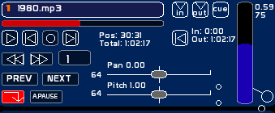
These levels are shown as decimal values, and as 0–127 values for Banger encoding.
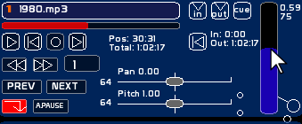
Activate the Loop button: playback restarts from the beginning when the file ends (or from CUE IN if CUE mode is active).
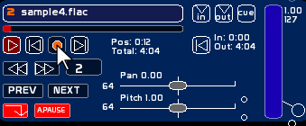
CUE mode defines a bounded playback zone between an IN point and an OUT point within the audio file.
Loop + CUE active: playback loops seamlessly between the IN and OUT points with a transparent crossfade.
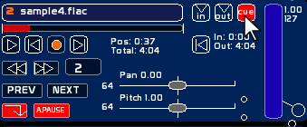
CUE mode also works without looping:
Each file has 4 independent CUE point sets, one per player. The same file can therefore have a different entry point depending on which player it is played on.
CUE positions are saved automatically with the show.
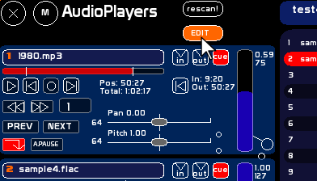
WhiteCat does not have a playlist in the strict sense, but AutoLoad mode enables automatic track sequencing.
In AutoLoad mode, each loaded file starts at its CUE IN point if CUE mode is active. The file list scrolls automatically to keep the current track visible.
When the last file in the folder is reached, the player stops (the empty slot at the end of the list is selected).
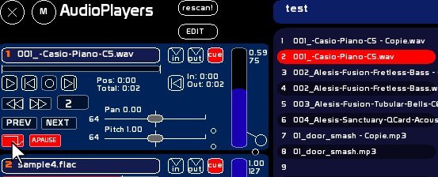
Tip: to organise several sequences within the same folder, prefix your files by player:
A_01_intro.wav A_02_scene.mp3 B_01_music.flac
By activating the MidiSendOut indicator, you can re-send the Volume, Pan, and Pitch signals outward. This indicator groups the re-send of all 3 controls together.
This feature allows motorised devices (BCF, X-Touch…) or rotary encoder controllers (BCR, Midi Fighter…) to update their physical state when values are changed via mouse or Banger.
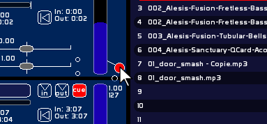
The [Affect to dock] section at the bottom of the window lets you assign the Volume, Pan, or Pitch of a player to a fader in the fader space.
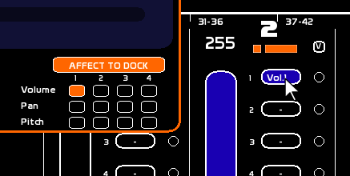
.ogg and .flac files are loaded entirely into RAM when assigned to a player. This ensures smooth, skip-free playback with no decoding latency, even in CUE or loop mode.
.wav and .mp3 files are not affected: they use their own loading mechanisms.
If an OGG or FLAC file exceeds the configured limit, it is played in degraded mode — playback remains possible but may show irregularities (less precise seeking, slight startup latency).
The setting is accessible in CFG → Core config, field RAM OGG/FLAC.
In most situations, the default 300 MB is more than sufficient.
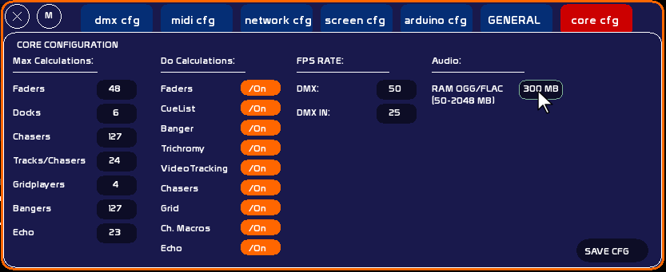
The table below gives an approximate idea of RAM usage by duration and format:
| Duration | OGG ~128 kbps | OGG ~256 kbps | FLAC stereo 44.1 kHz 16 bit | FLAC stereo 96 kHz 24 bit |
|---|---|---|---|---|
| 1 min | ~1 MB | ~2 MB | ~6 MB | ~18 MB |
| 5 min | ~5 MB | ~10 MB | ~29 MB | ~88 MB |
| 10 min | ~9 MB | ~19 MB | ~59 MB | ~176 MB |
| 30 min | ~28 MB | ~56 MB | ~176 MB | ~528 MB ⚠ |
| 1 hour | ~57 MB | ~113 MB | ~352 MB ⚠ | ~1056 MB ⚠ |
| 2 hours | ~113 MB | ~225 MB | ~704 MB ⚠ | ~2112 MB ⚠ |
⚠ = exceeds the default 300 MB limit → degraded mode playback. Increase the RAM limit if needed.
Tips: increase the limit if your OGG/FLAC files are large and the machine has sufficient RAM. Decrease it on low-memory configurations.
All player controls can be assigned to MIDI: Play, Stop, Loop, CUE on/off, SetIN, SetOUT, SeekToCueIN, Volume, Pan, Pitch, Prev, Next, AutoLoad, AutoPause.
Note: audio commands cannot be assigned in series (MIDI Aff. X2 or more). Assignment is in SOLO mode only.
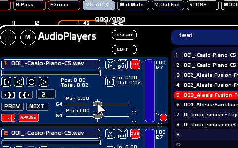
For more details: MIDI Configuration and Assignments